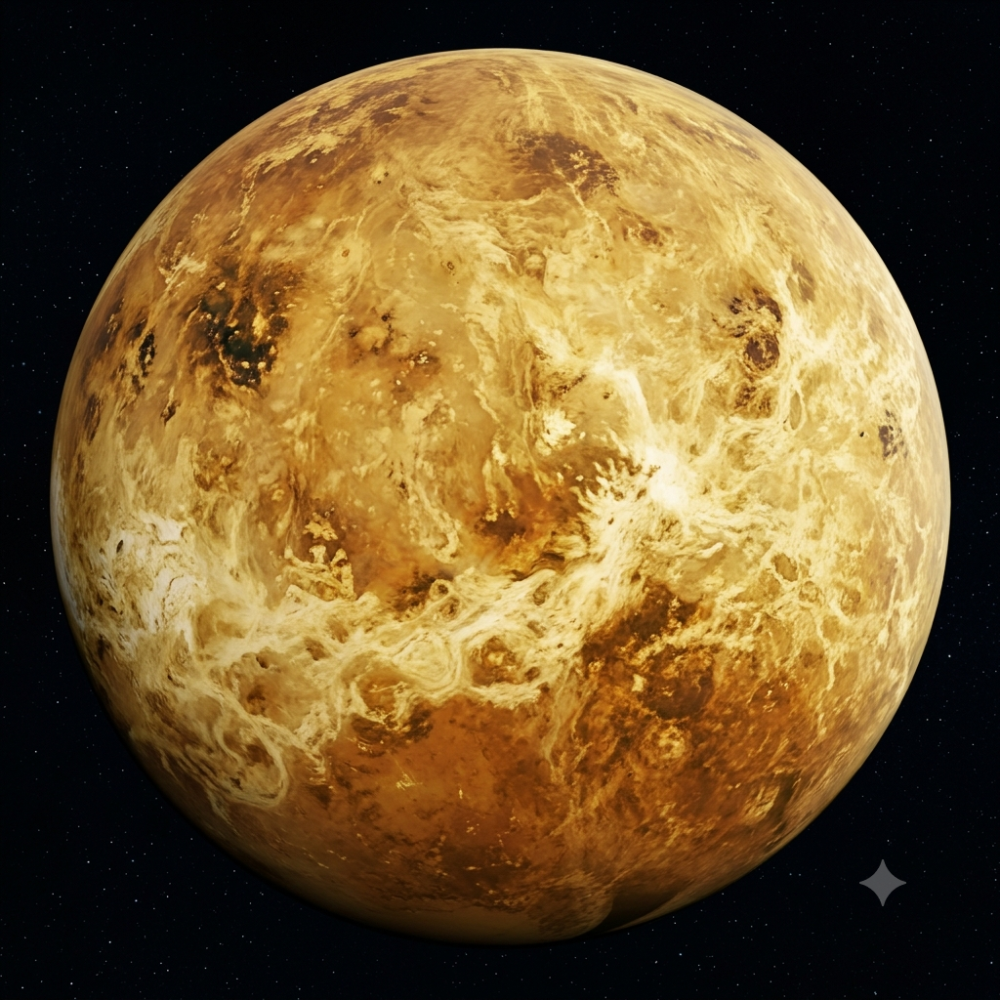

Formação da banda
Por: Tomás Candido
A Vênere Vai Vênus nasceu da sincronia musical de Gabriel Dourado e Tuzinho, que começaram criando as primeiras composições do projeto. Em seguida, a entrada de Thales no baixo e Lucas na bateria trouxe a pressão e a energia necessárias para o som decolar. Mais tarde, com a chegada de Giu nos teclados, o quinteto selou sua identidade repleta de sintetizadores e timbres marcantes. Essa junção gradual transformou o grupo em um dos destaques mais promissores do indie rock nacional.